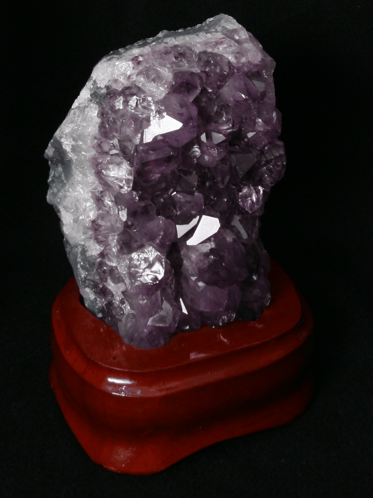
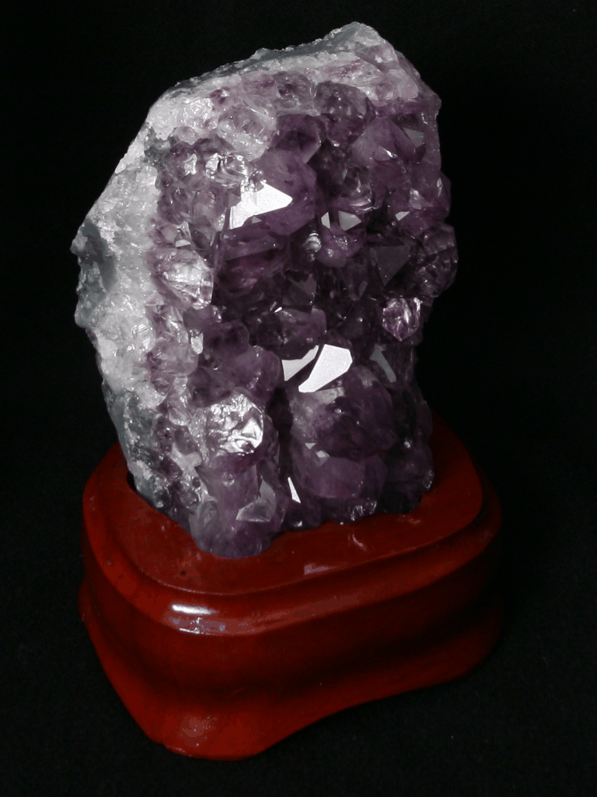

Gradient Domain Fusion
Overview
In this project, we investigate processing images in the gradient domain, which allows many different forms of image processing. We implement and investigate Poisson Blending and Mixed Gradient Blending.
The primary goal is to seamlessly blend an object from a source image s to a target image t. The approach of Poisson blending is to set up the problem as finding values for target pixels that maximally preserve the gradient of the source region (gradients of images are more noticable than overall intensity). This might change the color of the object, but it would be recognizable as the same object.
This is formatted as the following least squares problem, where v are new intensity values within the source region S (the masked source image), i is a pixel within the source region, and j is a 4-neighbor of i:

This is an adaptation of the methods in Perez et al. 2003
Toy Problem
A simple toy problem to get started with gradient domain processing is to try to reconstruct an image from its gradient values plus one pixel intensity. For each pixel, we have the following 2 objectives:
- minimize (v(x+1,y)-v(x,y) - (s(x+1,y)-s(x,y)))^2 (x-gradients of v should be close to the x-gradients of s)
- minimize (v(x,y+1)-v(x,y) - (s(x,y+1)-s(x,y)))^2 (y-gradients of v should be close to the y-gradients of s)
We also add the following constraint, since the above can be solved while adding any constant value to v:
- minimize (v(0,0)-s(0,0))^2 (the top left corners of both images should be the same)
This can be formulated as a sparse least squares problem Av=b. The source image and the reconstruction are shown below (and are virtually indistinguishable with error ~0.001).

Poisson Blending
The implementation of Poisson blending is stated in the Overview. In practice, we mask a region in the source image that will be our S, locate where in the target image t we want S to be placed, and solve the least squares problem given in the overview for points in S and corresponding points in t.
For example, we can see the results on blending this image of a penguin with images of hikers.


We can see that the poisson blending blends the source image quite well into the target. There are some artifacts near the bottom of the penguin that are visible due to there being edges in the source image (the snow the penguin is standing on) that were not cropped out. There is also noticeable blur around the penguin. These are fixed in the folowing section on Mixed Gradient Blending, where more examples are also shown.
Bells & Whistles: Mixed Gradient Blending
To implement Mixed Gradient Blending we make a slight modification to the Poisson Blending least squares problem. Instead of using the source gradient as the guide, we instead use the gradient in the source or target with larger magnitude d_ij. abs(s_i-s_j) > abs(t_i-t_j), then d_ij = s_i-s_j; else d_ij = t_i-t_j

Examples with the source cropped onto the target, the Poisson Blended, and Mixed Gradient Blended images are shown below.


Below is an example of colors changing during the blending process. This is probably due to the background of the source not being similar enough in color to the target image. It is noted that poisson blending is actually preferable in this instance to mixed-gradient blending, as some artifacts from the target image can appear on the source image through mixed-gradient blending (e.g. boats appearing on Hatsune Miku's hair).
Below is an example of a source image having a nonuniform background (as well as colors changing slightly). Since we are blending gradients and the background of the source image has high image gradients due to its edges, neither image blending technique works very well.
Light Field Camera
Overview
Capturing multiple images over a plane orthogonal to the optical axis allows us to achieve complex effects using simple operations such as shifting and averaging. In this project, we reproduce depth refocusing and aperture adjustment effects using light field data as detailed in Ng et al.
We use data from the Stanford Light Field Archive for the light field data.
Depth Refocusing
We can shift the light field images based on their (x y) position in the photosensor grid relative to the (x y) position of the center of the grid. The Stanford Light Field Archive images captured 289 images in a 17x17 grid, and so we shift the images by x_shift = c*(x-8) and y_shift=-c*(y-8). c is an arbitrary constant that is varied to give the depth that the simulated camera is focused at.
Below are gifs of results of varying c from c=0 to c=3.5 in steps of 0.1 for the chessboard and amethyst datasets.


Aperture Adjustment
We can use a similar process to simulate a camera of larger and smaller apertures. Averaging a large number of images sampled over the light field grid mimics a camera with an effectively larger aperture, while averaging smaller numbers of images mimics a smaller aperture. To implement this in practice, we define a constant aperture size a, and if |x-8| and |y-8| > a then we do not include it in the picture
The gifs below are produced varying a from 0 to 20 in steps of 0.5 at c=0.8. Increasing the aperture size effectively blurs the image before and beyond the focused depth.
 

Summary
In summary, we can manipulate images taken over a plane orthogonal to the optical axis to mimic classical optical effects such as depth refocusing and aperture adjustment. I found this quite interesting, since this can just be done via post-processing in software as opposed to having to physically manipulate a camera and retake a photo.